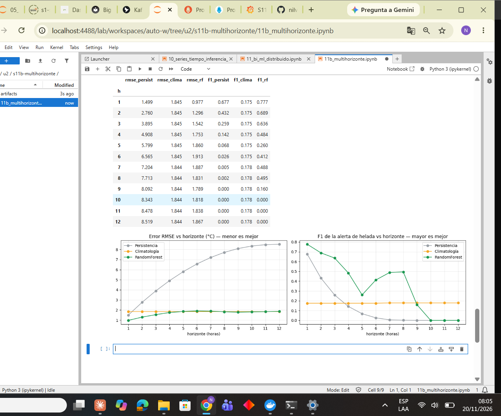

S11b · ¿Hasta cuántas horas se puede predecir?¶
Extensión de S10: se entrena un RandomForest por horizonte h = 1…12 (temperatura h horas adelante, con lead()) y se compara contra dos referencias.
Notebook: pyspark/sesiones/u2/s11b-multihorizonte/11b_multihorizonte.ipynb.
Método¶
- Mismo histórico Gold (hasta 2023-05-26 para entrenar; prueba 2023-05-26 → 2026-10-01, 29 378 horas) y mismas variables y hiperparámetros que S10.
- Se usan las mismas filas para todos los horizontes (las que tienen los 12 objetivos: 146 820), para que la comparación sea justa.
- Persistencia: "dentro de
hhoras será igual que ahora". Es una referencia débil a horizontes largos porque ignora el ciclo diario. - Climatología: media histórica de esa hora del día en ese mes (solo con datos de entrenamiento). Es la referencia justa a horizontes largos.
Resultados¶
| h | RMSE persistencia | RMSE climatología | RMSE RandomForest | F1 persistencia | F1 climatología | F1 RandomForest |
|---|---|---|---|---|---|---|
| 1 | 1.499 | 1.845 | 0.977 | 0.677 | 0.175 | 0.777 |
| 2 | 2.760 | 1.845 | 1.296 | 0.432 | 0.175 | 0.689 |
| 3 | 3.895 | 1.845 | 1.542 | 0.259 | 0.175 | 0.636 |
| 4 | 4.908 | 1.845 | 1.753 | 0.142 | 0.175 | 0.484 |
| 5 | 5.799 | 1.845 | 1.860 | 0.068 | 0.175 | 0.260 |
| 6 | 6.565 | 1.845 | 1.913 | 0.026 | 0.175 | 0.412 |
| 7 | 7.204 | 1.844 | 1.887 | 0.005 | 0.178 | 0.488 |
| 8 | 7.713 | 1.844 | 1.831 | 0.002 | 0.178 | 0.495 |
| 9 | 8.092 | 1.844 | 1.789 | 0.000 | 0.178 | 0.160 |
| 10 | 8.343 | 1.844 | 1.818 | 0.000 | 0.178 | 0.000 |
| 11 | 8.478 | 1.844 | 1.838 | 0.000 | 0.178 | 0.000 |
| 12 | 8.519 | 1.844 | 1.867 | 0.000 | 0.178 | 0.000 |

Conclusión¶
| Horizonte | Temperatura | Alerta de helada |
|---|---|---|
| 1 a 3 h | RandomForest claramente mejor que ambas referencias (0.98 – 1.54 °C frente a 1.85 °C) | Útil: F1 0.64 – 0.78 |
| 4 h | Mejora pequeña (1.75 frente a 1.85 °C) | F1 0.48 |
| 5 a 12 h | Igual que la climatología (~1.85 °C): el modelo solo conoce el ciclo diario | F1 hasta 0.50 (h = 8), 0 desde las 10 h |
Con las variables que llegan por Kafka (temperatura, punto de rocío, humedad, nubosidad, hora y mes) el modelo predice con ventaja real hasta unas 3-4 horas. La alerta de helada conserva algo de valor hasta ~8 h, pero con recall bajo; la calidad alta (F1 ≥ 0.6) llega solo hasta 3 h. Desde las 10 h el modelo no emite ninguna alerta porque la regresión se acerca a la media. Predecir más lejos necesitaría información que el evento no trae (presión, viento, pronóstico numérico).
Cómo no leer esta tabla
A 12 h el RandomForest parece ganar a la persistencia (1.87 frente a 8.52 °C), pero esa referencia es muy débil. Contra la climatología empata. Ganarle a la persistencia a horizontes largos no demuestra capacidad de predicción.
Observación no investigada
El F1 del RandomForest baja en h = 5 (0.260) y se recupera en h = 6-8. Probablemente depende de la hora del día de la hora objetivo, pero no se comprobó.
Los resultados por horizonte se publican en Pushgateway y se muestran en la fila F del tablero.